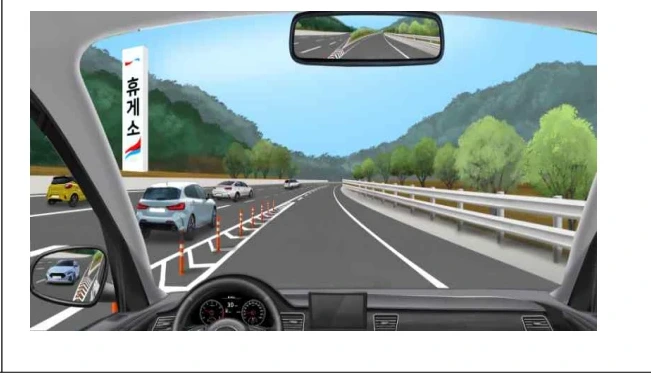

828. 고속도로 휴게소에서 휴식을 취하고 고속도로로 합류하려고 한다. 가장 안전한 운전방법 2가지는?

- ①일시정지 후 주행 중인 차량이 없을 때 도로로 합류한다.
- ②가속을 통해 한번에 1차로까지 가로 지른다.
- ③충분한 가속을 통해 좌측을 확인한 후 합류한다.
- ④갓길로 계속 주행한다.
- ⑤다른 차량의 통행을 방해하지 않도록 한다.
정답 보기
정답
③ 충분한 가속을 통해 좌측을 확인한 후 합류한다.
⑤ 다른 차량의 통행을 방해하지 않도록 한다.
근거·해설
도로교통법제65조 고속도로로 진입 시 자동차(긴급자동차 제외)의 운전자는 그 고속도로를 통행하고 있는 다른 자 동차의 통행을 방해하여서는 안된다. 또한 고속도로를 통행중인 차량의 속도는 매우 빠르기 때문에 충분한 가속을 통해 고속도로에 진입하여야 한다.